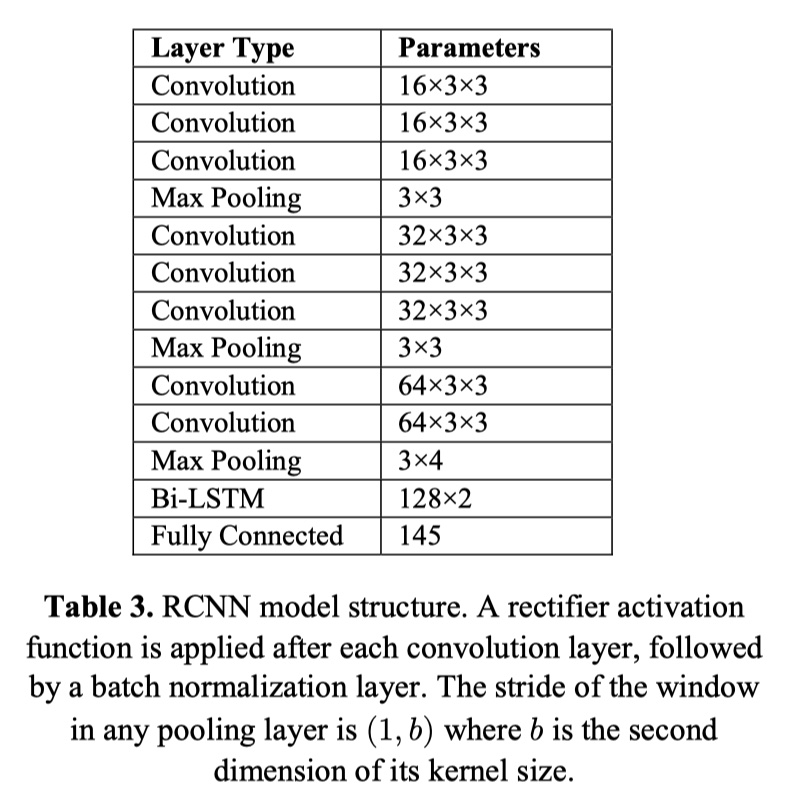
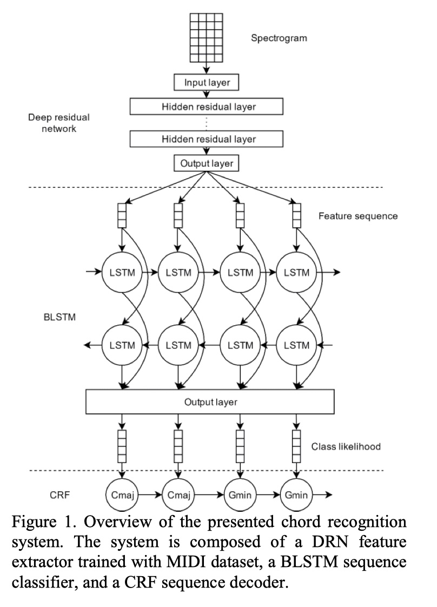

对历年MIREX和弦识别赛道里的方法做的一些总结
| 方法 | 特征 | 推断模型 | 其他 |
|---|---|---|---|
| 2019_CM1 | NNLS Chroma | HMM | |
| 2019_CLSYJ1 | CQT | CNN | 移调、降采样、添加噪声等扩充数据集 |
| 2018_CM1 | NNLS Chroma | HMM | |
| 2018_JLCX1 | CQT | RCNN | |
| 2018_SG1 | STFT | CNN | |
| 2017_CM2 | NNLS Chroma | HMM | |
| 2017_JLW1 | NNLS Chroma | HMM | |
| 2017_KBK1 | 使用DNN提取Chroma | CRF | |
| 2017_KBK2 | 使用CNN提取特征 | CRF | |
| 2017_WL1 | 用 MIDI-audio对训练的DRN去估计 音频每一帧的音符类别 |
BLSTM-CRF |
论文链接：MIREX论文合集
2018_JLCX1
网络结构：

2017_KBK1
使用DNN提取Chroma 参考论文[3]
[3] Filip Korzeniowski and Gerhard Widmer. Feature Learning for Chord Recognition: The Deep Chroma Extractor. In Proceedings of the 17th International Society for Music Information Retrieval Conference (ISMIR), New York, New York, USA, August 2016.
使用CNN提取特征参考论问[4]
[4] Filip Korzeniowski and Gerhard Widmer. A Fully Convolutional Deep Auditory Model for Musical Chord Recognition. In Proceedings of the IEEE International Workshop on Machine Learning for Signal Processing, Salerno, Italy, September 2016.
2017_WL1
网络结构
